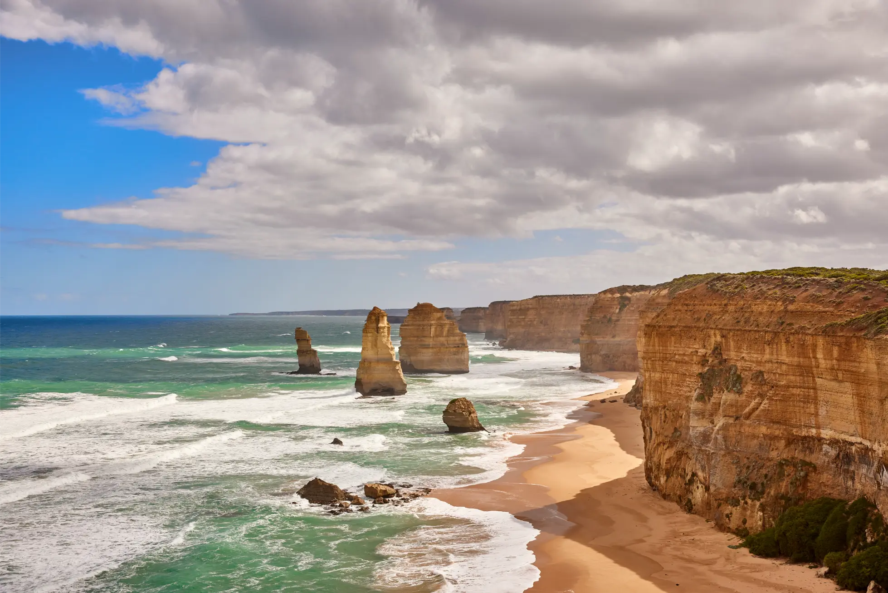
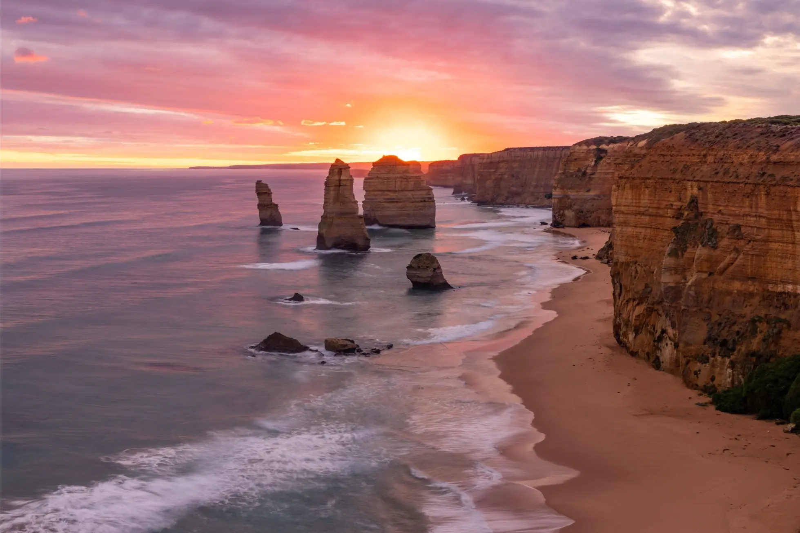
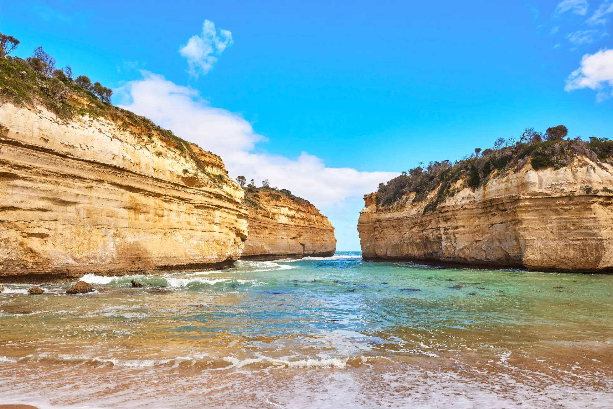
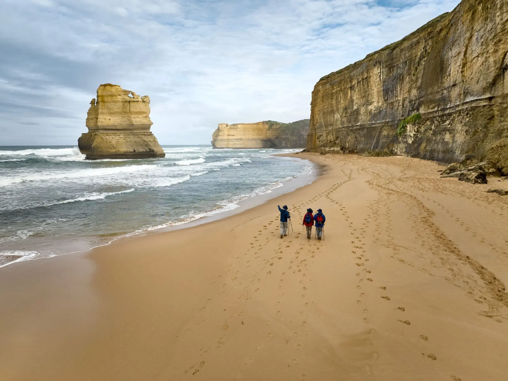
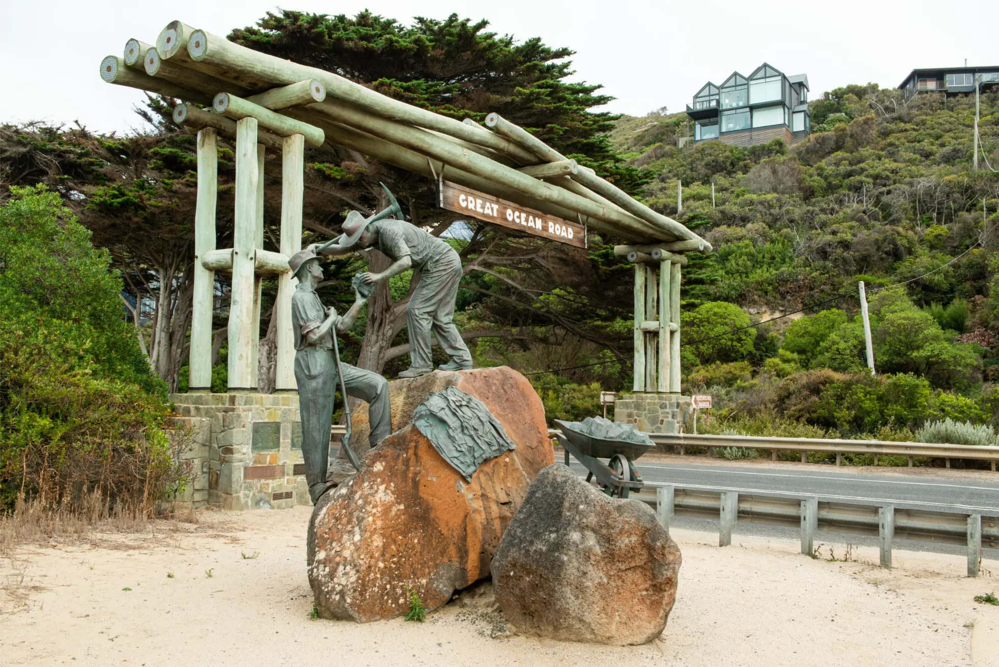
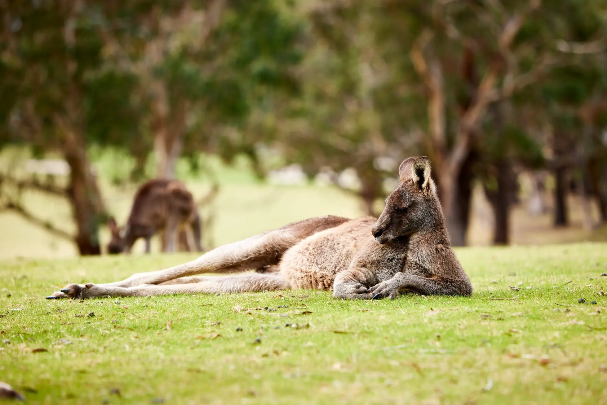

Essential
Twelve Apostles, Loch Ard Gorge, Gibson Steps where access allows, and the Memorial Arch.

Authority guide
The Great Ocean Road has more stops than most visitors can comfortably include in one day from Melbourne.
This guide helps you prioritise the strongest coastal, rainforest, wildlife, and town stops for a realistic day.
For a one-day trip from Melbourne, think in priorities: essential, worthwhile if time allows, and better for slower or extended trips.
Twelve Apostles, Loch Ard Gorge, Gibson Steps where access allows, and the Memorial Arch.
Lorne, Apollo Bay, selected coastal lookouts, wildlife areas, and short rainforest walks.
Longer walks, extra town time, detours, and multiple extended photography stops.

The most famous stop and a major reason many visitors make the journey.

Dramatic cliffs, beach views, and one of the region's best-known shipwreck stories.

A beach-level view beneath limestone cliffs, when access and conditions allow.

A classic photo stop and meaningful marker of the road's history.

A short rainforest walk through the Otways when timing allows.

A known wildlife area where koalas and native birds may be seen. Sightings are never guaranteed.
Lorne and Apollo Bay are useful coastal town stops, especially for breaks, cafes, and seaside atmosphere. Teddy's Lookout, Split Point Lighthouse, and selected coastal viewpoints can be worthwhile when the route and timing suit.
Kennett River, Maits Rest Rainforest, and Great Otway National Park can add variety to the day, but they need to be balanced against the time required to reach the Twelve Apostles region.
Most first-time visitors should prioritise the Twelve Apostles, Loch Ard Gorge, Gibson Steps where possible, Memorial Arch, and a small number of coastal or nature stops.
View the One-Day ItineraryAustralian Journeys can help shape a private Great Ocean Road day around the stops that matter most to your group.
Plan My Private Tour